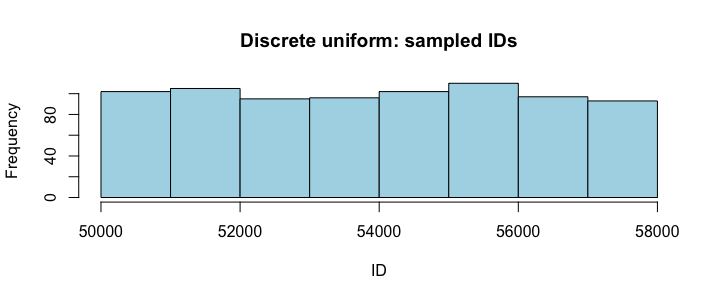
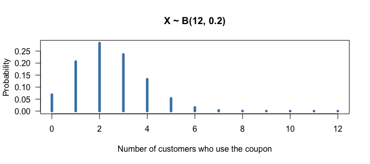

- ① 550_Probability Distributions ／ Random Variables
- ② Uniform Distributions
- ③ Binomial Probabilities ／ Binomial Distributions
- ④ Geometric Distributions ／ Poisson Distribution
確率変数と、R の4つの接頭辞
分布（distribution）は「変数がどんな値を、どのくらいの頻度でとるか」です。確率変数（random variable）は、ランダムな試行の結果で値が決まる数です。例：コインを2回投げたときの裏の回数 T（0, 1, 2 のどれか）。
| 離散 discrete | 連続 continuous | |
|---|---|---|
| 値 | 数直線上の飛び飛びの点 | ある区間のすべての値 |
| イメージ | 数える（購入数、不良品の数、来店者数） | 測る（冷凍庫の温度、重さ、滞在時間） |
| グラフ | 棒（確率） | 密度曲線（下の面積が確率、全体で 1） |
| この回の分布 | 一様・二項・幾何・ポアソン | 一様・正規・t・χ²・F（次の回以降） |
R の分布関数には、すべて同じ4つの接頭辞が付きます。二項分布なら rbinom・dbinom・pbinom・qbinom。
| 接頭辞 | 意味 | 問いの形 |
|---|---|---|
| r | random：乱数を生成 | シミュレーションしたい |
| d | density：ちょうどその値の確率（連続なら密度） | 「ちょうど 3 人」 |
| p | probability：その値以下の累積確率 | 「3 人以下」 |
| q | quantile：累積確率から値を逆算 | 「50 パーセンタイルは何人？」 |
一様分布
離散一様分布は、サイコロのようにどの値も同じ確率の分布です。顧客 ID から無作為に調査対象を選ぶのも、離散一様分布からの抽出です。
ids <- 50001:58000 # 8,000 customer IDs set.seed(42) chosen <- sample(ids, size = 800, replace = FALSE) head(chosen, 8) hist(chosen, col = "lightblue", main = "Discrete uniform: sampled IDs", xlab = "ID")

ヒストグラムはほぼ平ら（山がない）です。連続一様分布は、区間内のどの実数も同じ確からしさでとります。runif() で生成します。
set.seed(42) round(runif(6, min = 2, max = 5), 2) punif(3, min = 2, max = 5) # P(X <= 3)
2〜5 の一様分布で 3 以下になる確率は、区間の長さの比 (3 − 2)/(5 − 2) = 1/3 です。連続一様分布は、ベイズ統計の「情報のない事前分布」としても使われます。
二項分布
ある通販会社がクーポン付きメールを 12 人に送り、1人あたり 20% の確率でクーポンが使われるとします（架空）。クーポンを使う人数 X は二項分布 X ~ B(n = 12, p = 0.2) に従います。
二項分布の4条件（BINS）
| 条件 | この例 |
|---|---|
| Binary：結果が成功／失敗の2つ | 使う／使わない |
| Independent：試行どうしが独立 | 人どうしは影響しない（母集団が標本の10倍以上なら非復元でも OK＝10% 条件） |
| Number：試行回数 n が固定 | 12 人 |
| Same：成功確率 p が一定 | 全員 0.2 |
dbinom(3, size = 12, prob = 0.2) # exactly 3 choose(12, 3) * 0.2^3 * 0.8^9 # same, by the formula pbinom(3, size = 12, prob = 0.2) # at most 3 pbinom(3, size = 12, prob = 0.2, lower.tail = FALSE) # 4 or more qbinom(0.5, size = 12, prob = 0.2) # median number
公式は P(X = k) = ₙCₖ pᵏ (1 − p)ⁿ⁻ᵏ（choose(n, k) が ₙCₖ）。「ちょうど3人」は約 0.236、「3人以下」は約 0.795、「4人以上」は約 0.205 です。
pbinom(4, …, lower.tail = FALSE) と書くと「4 より大きい（5 人以上）」になってしまいます。離散分布では q = 3 を使うのが正解です。k <- 0:12 plot(k, dbinom(k, 12, 0.2), type = "h", lwd = 5, las = 1, col = "steelblue", xlab = "Number of customers who use the coupon", ylab = "Probability", main = "X ~ B(12, 0.2)")

シミュレーションでも確かめられます。大数の法則により、くり返しを増やすほど理論値に近づきます。
set.seed(123) sims <- rbinom(10000, size = 12, prob = 0.2) mean(sims >= 4)
幾何分布とポアソン分布
幾何分布：初めて成功するまで
営業電話の成約率が 0.1 のとき、初めて成約するのが何本目かは幾何分布に従います。条件は二項分布とほぼ同じ（成功/失敗・独立・p 一定）ですが、試行回数は決まっておらず「初めての成功」で止まります。右に歪んだ分布で、平均は 1/p（ここでは 10 本目）です。
p <- 0.1 # R counts FAILURES before the first success (X >= 0) dgeom(4, prob = p) # first success on call 5 p * (1 - p)^4 # same by formula (trial-count version) pgeom(19, prob = p, lower.tail = FALSE) # 20+ failures, i.e. success on call 21 or later
dgeom() は「成功の前の失敗の数（0 から）」で数えます。「何本目で初めて成功するか（1 から）」で考えるときは、1 を引いて渡します（5本目 → dgeom(4, …)）。シミュレーションでは rgeom(…) + 1。ポアソン分布：一定の時間・空間での回数
サポート窓口に1時間あたり平均 4 件の問い合わせが来るとします。1時間の件数はポアソン分布 X ~ Poisson(λ = 4) で表せます。条件は、①同じ長さの区間なら発生確率が同じ、②区間どうしの発生が独立、の2つです。
dpois(2, lambda = 4) # exactly 2 in an hour 4^2 * exp(-4) / factorial(2) # formula: lambda^x e^-lambda / x! ppois(6, lambda = 4, lower.tail = FALSE) # more than 6 in an hour ppois(0, lambda = 4 * 30 / 60) # no calls in 30 minutes (lambda = 2) qpois(0.9, lambda = 4) # 90th percentile
区間の長さを変えるときは λ も比例させます（1時間 4 件 → 30分 2 件）。ポアソン分布は平均と分散がどちらも λ という特徴があります。
（1）不良率 3% の部品を 50 個検査したとき、不良品が 2 個以下の確率。（2）1日平均 1.5 件起こるサーバー障害が、ある日 ちょうど 0 件の確率。
pbinom(2, size = 50, prob = 0.03) dpois(0, lambda = 1.5)
（1）は回数が決まった成功/失敗なので二項：約 0.811。（2）は一定時間の発生回数なのでポアソン：約 0.223。